сигнал / шум
Информационный шум
Как находить нужное в потоке сообщений
→ дальше · F весь экран · N заметки
опыт на 10 секунд
Посчитайте в уме: 17 × 6
Ответ: 102. Срочных уведомлений среди них не было, но считать они мешали.
6+
часов в день подросток проводит за экраном
Откройте в телефоне «Экранное время». Сколько у вас?
Mediascope, июнь 2026 · Россия, 12–17 лет
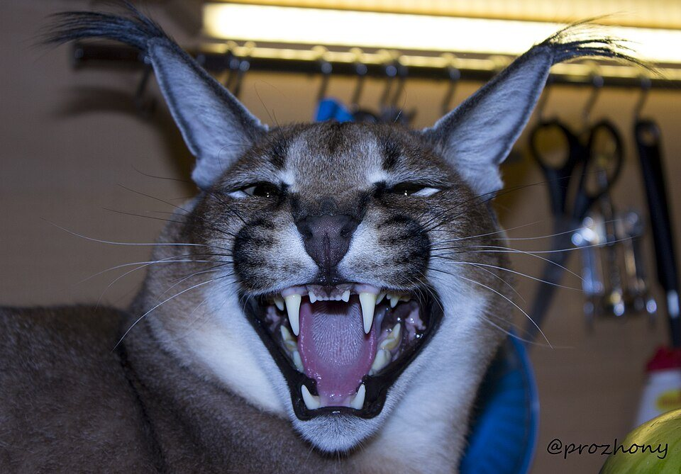
клод шеннон, 1948
Сигнал — что хотели передать.
Шум — что примешалось по дороге.
Подвигайте ползунок
Завтра зачёт по математике, ауд. 204
определение
Информационный шум — сообщения, которые занимают внимание и не помогают в том, чем вы сейчас заняты.
| Сигнал | Шум | |
|---|---|---|
| Задача | относится к ней | не относится |
| Источник | известен | неизвестен |
| Проверка | можно проверить | проверить нельзя, давит на эмоции |
Пример. Мем с котом на перерыве — сигнал: вы хотели отдохнуть. Тот же мем за час до зачёта — шум.
восемь видов шума
Что из этого вы видели сегодня до первой пары?
- Кликбейт«Вы не поверите…»
- Спам и реклама«Только сегодня −90%»
- Слухи и фейки«Знакомый сказал, что…»
- ДублиОдна новость в 12 каналах
- Бесконечная лента«Ещё одно видео — и спать»
- НейрослопИИ-контент ради просмотров
- БотыКомментарии без людей
- Уведомления«Вас давно не было!»
почему шума так много
Сервисы зарабатывают на нашем внимании
«Богатство информации порождает бедность внимания».Герберт Саймон, 1971
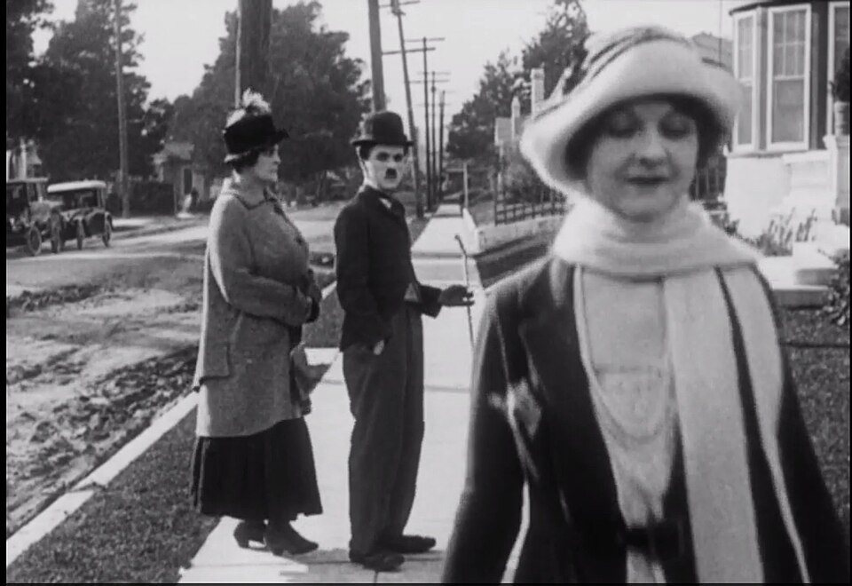
подготовка к зачёту я ещё одно видеосначала угадайте, потом откройте
Угадайте три числа
слово 2024 года · Оксфорд
Brain rot
Буквально «гниение мозга». Так называют состояние после нескольких часов простого однообразного контента.
Вопрос группе: что из такой ленты вы помните на следующий день?
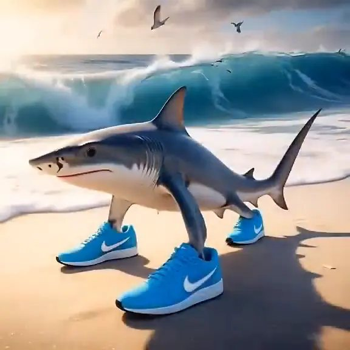
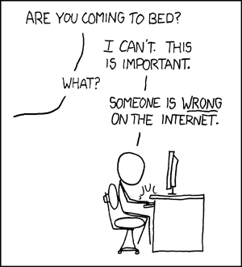
слово 2025 года · Оксфорд
Rage bait
Контент, который специально сделан так, чтобы разозлить. Злой комментарий лента тоже считает за интерес.
— Ты идёшь спать?
— Не могу. В интернете кто-то неправ.
xkcd.com/386 · Рэндел Манро · CC BY-NC 2.5
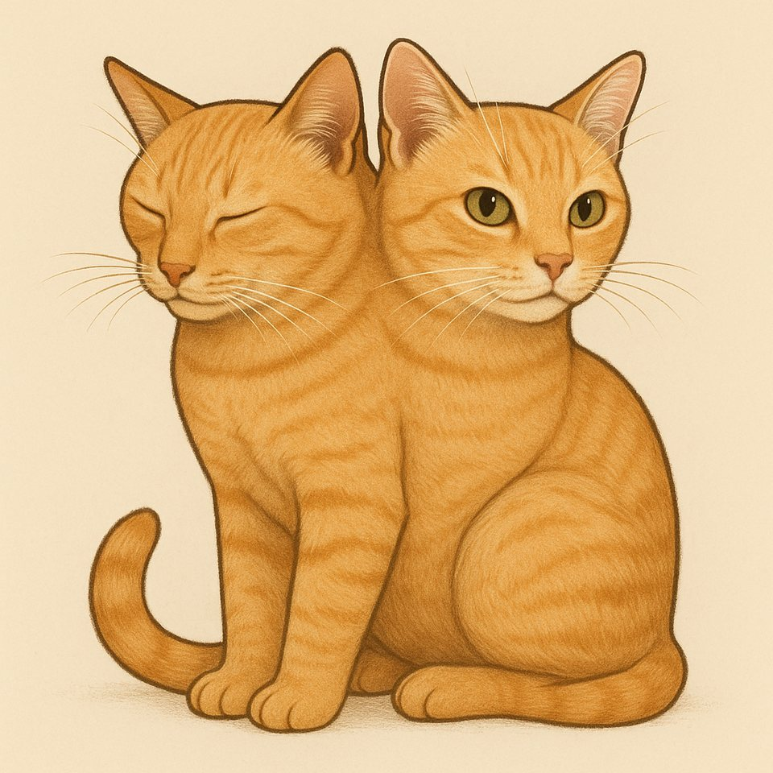
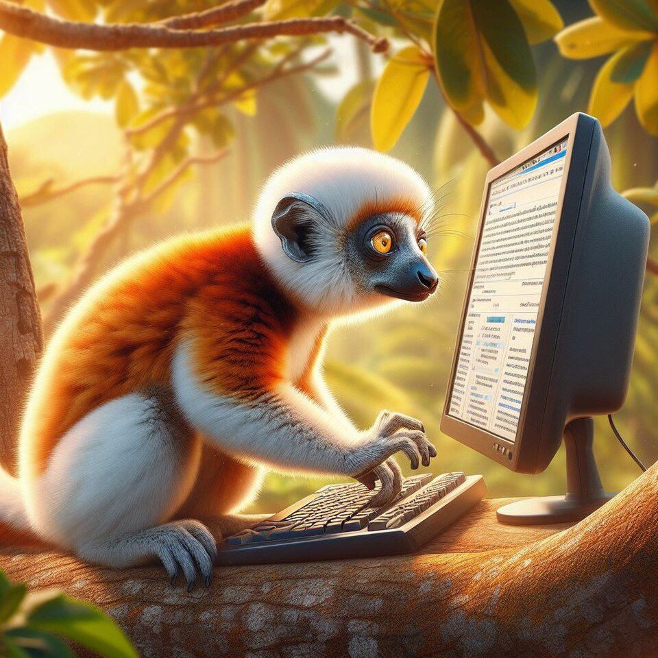
слово 2025 года · Merriam-Webster
Slop — нейрослоп
Контент низкого качества, который массово делают с помощью ИИ.
- Делается за секунды, поэтому его очень много
- Выкладывается ради просмотров
- Автора, который отвечает за сказанное, нет
Цифра. Больше 20% роликов, которые YouTube предлагает новому пользователю, — нейрослоп (Kapwing, 2025).
что изменил ИИ
Правдоподобную подделку теперь делают одним запросом
голосуем руками
ИИ или фото?
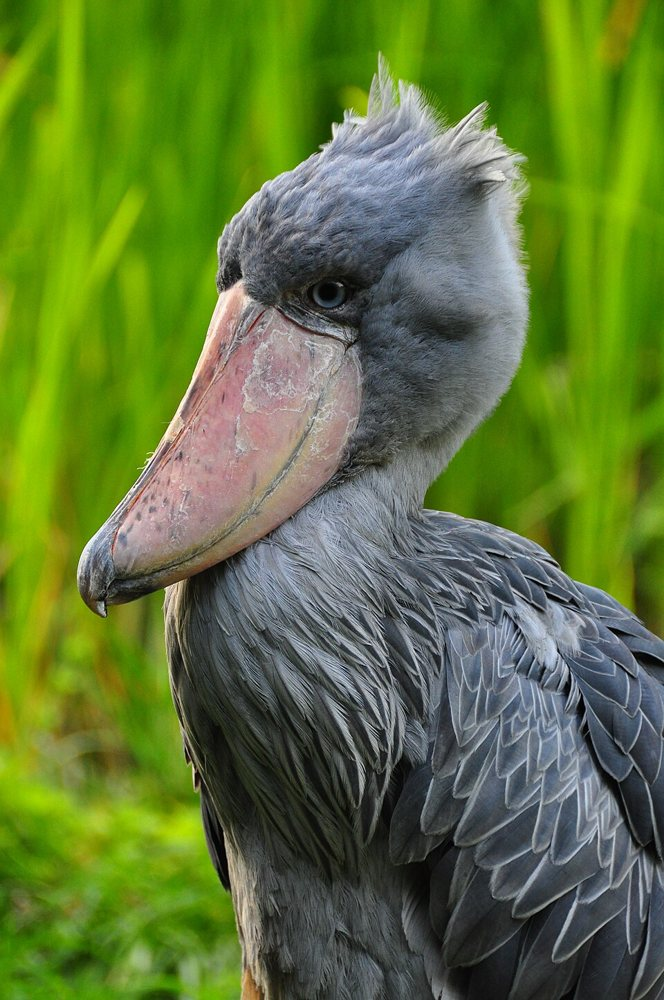
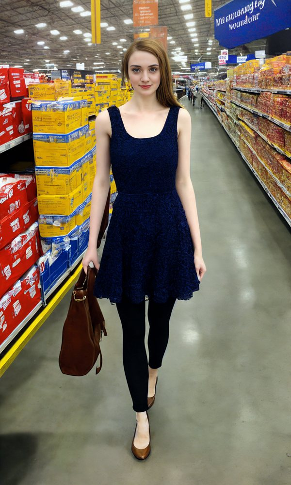
Вывод. Необычная картинка может оказаться настоящей, а самая обычная — сгенерированной.
ошибки нейросетей
В 2024 году ИИ-поиск посоветовал добавить в пиццу клей
Якобы так не сползёт сыр. Совет модель взяла из шутки на форуме.
Термин. Ответ, который звучит уверенно, но расходится с фактами, называют галлюцинацией.
боты
53%
интернет-трафика создают боты
Imperva Bad Bot Report, 2026
стресс
37%
россиян регулярно испытывают стресс
В 2022 году было 26%. Молодые говорят о стрессе в четыре раза чаще старших.
Причины. Их много. Постоянный поток сообщений и плохих новостей — одна из них.
ВЦИОМ, опрос в октябре 2025 года
внимание · Каролинский институт, 2025
Чем больше времени в соцсетях, тем труднее сосредоточиться
8324 ребёнка наблюдали четыре года. У тех, кто много сидел в соцсетях, нарастали симптомы невнимательности, как при СДВГ.
| Соцсети | симптомы невнимательности нарастали | связь есть |
|---|---|---|
| Видеоигры | изменений не увидели | связи нет |
| Телевизор | изменений не увидели | связи нет |
Оговорка. Диагноз СДВГ ставит врач, и одной лентой он не объясняется. Речь о симптомах: человеку труднее удерживать внимание.
проверка
Четыре проверки перед тем, как переслать
- СтопСообщение злит или восхищает? Сначала проверьте его.
- ИсточникКто это говорит и откуда он это знает?
- ДругиеПишут ли об этом другие источники?
- ОригиналОткуда взяты фото, цитата, цифра?
ии как инструмент
Нейросеть помогает разобрать большой объём информации
- Сжать
- часовое видео в десять строк
- Объяснить
- трудную тему на примерах
- Сравнить
- два источника: в чём они расходятся
три правила
- Просите ссылки на источники и открывайте их.
- Чем дороже ошибка, тем тщательнее проверяйте ответ.
- За сданную работу отвечаете вы, даже если текст написала нейросеть.
можно сделать сегодня
Как уменьшить шум
- Оставить уведомления только от людей
- На парах включать «Не беспокоить»
- Отписаться от каналов, которые месяц не открывали
- Листать ленту по таймеру
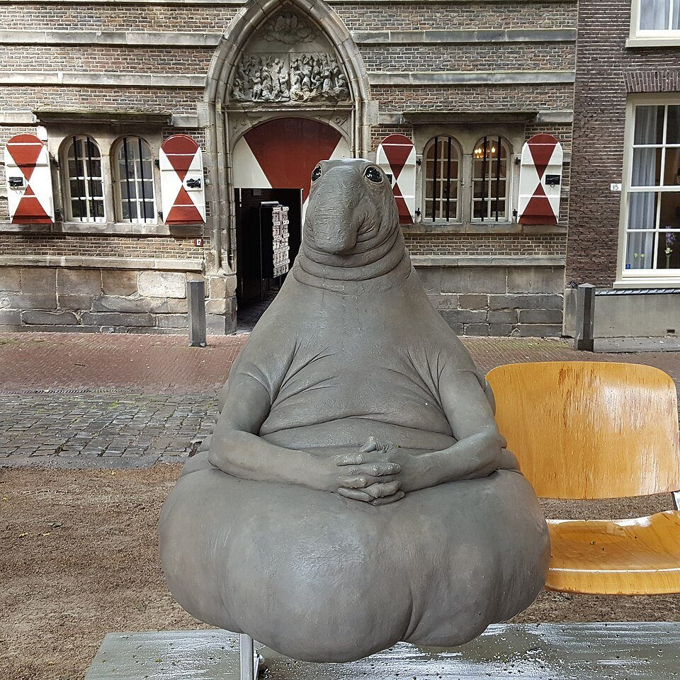
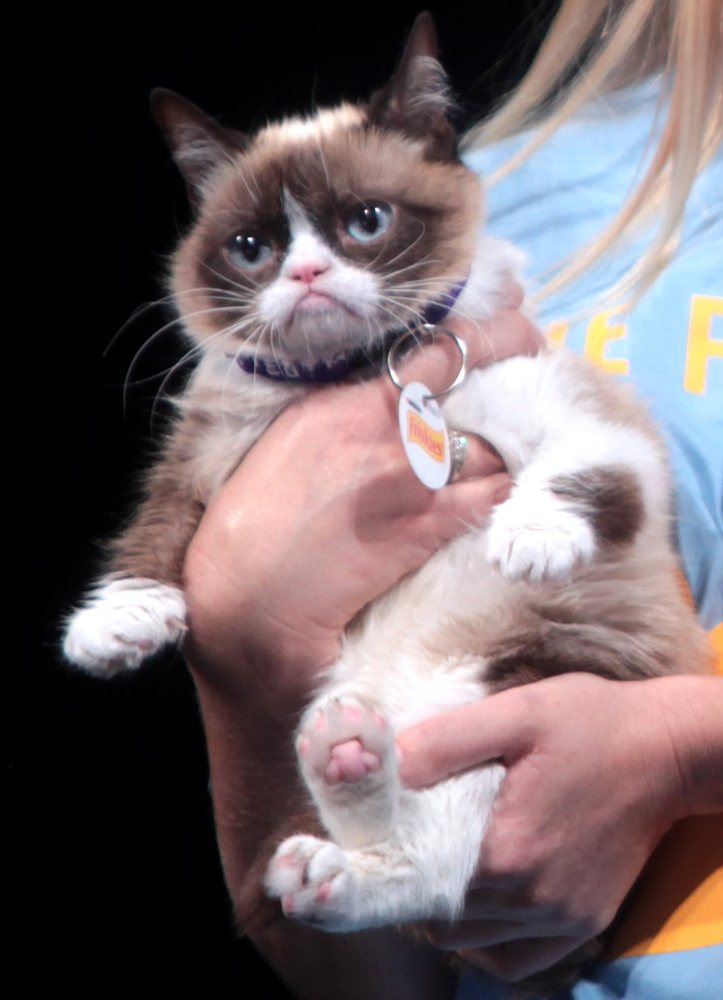
итог
- Шум — сообщение не по задаче или без источника.
- От постоянного шума растут стресс и рассеянность.
- С нейросетями шума стало больше, но они же помогают его разбирать.
- Перед пересылкой: стоп, источник, другие, оригинал.
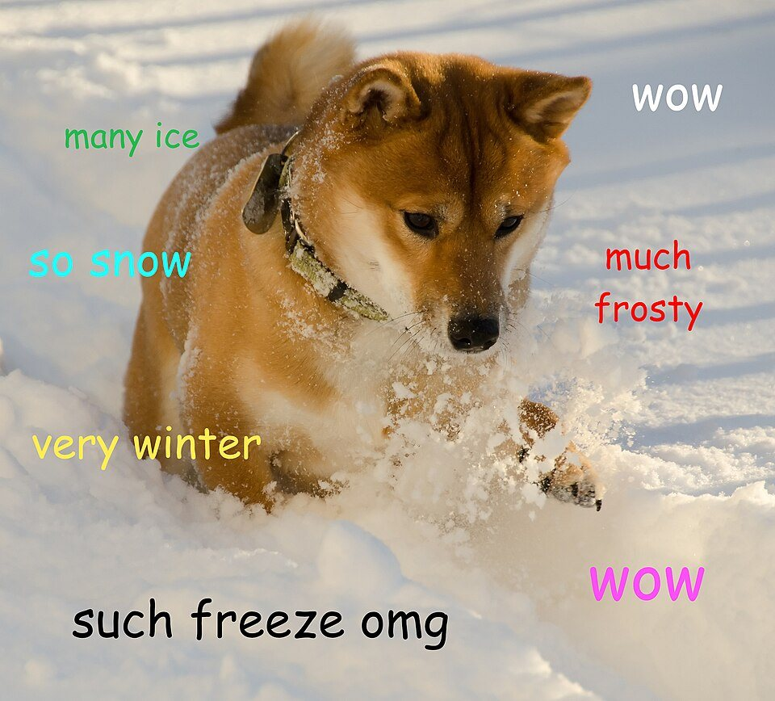
источники
- Mediascope. Медиапотребление подростков, ПМЭФ, июнь 2026
- ВЦИОМ. Опрос о стрессе, октябрь 2025
- Karolinska Institutet. Social media use and inattention symptoms. Pediatrics Open Science, декабрь 2025
- Imperva (Thales). Bad Bot Report, 2026
- Oxford University Press. Word of the Year 2025: rage bait; 2024: brain rot
- Merriam-Webster. Word of the Year 2025: slop
- Kapwing. AI Slop Report, 2025
- ВОЗ, Европейское бюро. Teens, screens and mental health, 2024
- Gloria Mark. Attention Span, 2023
- Common Sense Media. Constant Companion, 2023
- Herbert Simon. Designing Organizations for an Information-Rich World, 1971
- Mike Caulfield. SIFT (The Four Moves), 2019
- Картинки: Wikimedia Commons (общественное достояние и лицензии CC), xkcd (CC BY-NC 2.5). Авторы и ссылки — в README.md